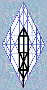

|
|
Projections of Man/AdamThe Twenty-Four Elders: The Four Interlocking Trees of Life
The visions depicted in the Revelation of John concerning the four angels, the four beasts, and the twenty-four elders surrounding the heavenly throne of YHWH Elohim are One, even as Yahushúa is one with the Father and with those who have overcome in His name in the footsteps of Y'Shúa. In the Crown Diamond display, the ten sephiroth of the Projection of Man are multiplied within the four interlocking symbols of the Tree of Life to reveal twenty-four thrones, the number of sephiroth active within the perfected spiritual man. The four angelic beasts first appear in the visions of the prophet Ezekiel/Yechezkel, where they are given faces. Connecting the twenty-four elders of Revelation with the chariot vision of the Prophet is just the beginning: scripture is an interweaving of such connections; and these pages will assign names to the faces, even as it is written: "For precept must be upon precept, precept upon precept; line upon line, line upon line; here a little, and there a little." By no means is this presentation in any way an end, but it may well be in the middle of a beginning. I would add this: the Kingdom of Heaven is arrayed within us, wheels within wheels: within wheels that don't stop turning as they go. In our minds, impressions swim around and disappear and reappear and suddenly all add up because wheels are turning within wheels: even as the four angels surrounding the throne are one with the four living rivers of Eden |
 |